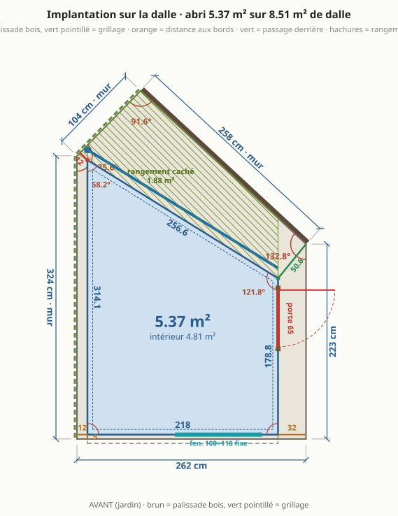
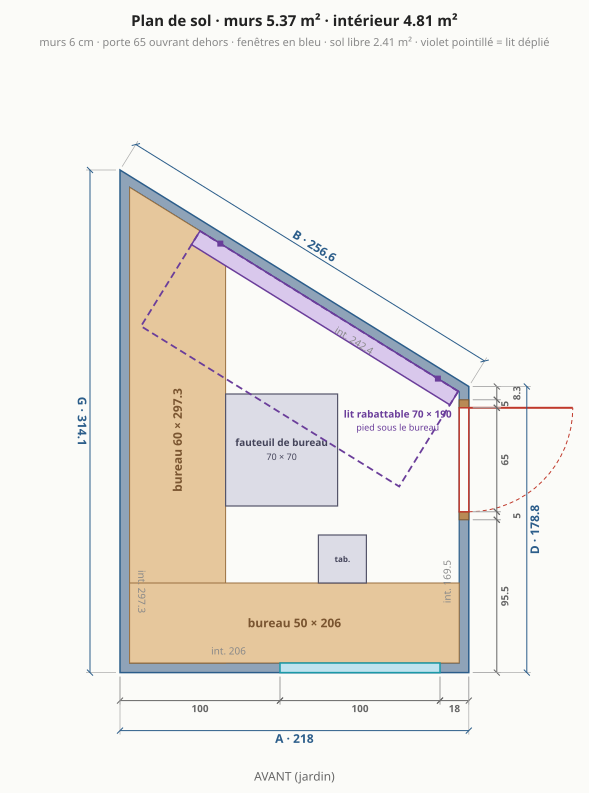
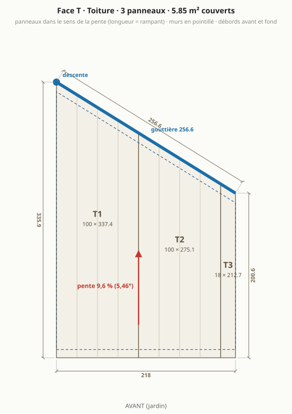
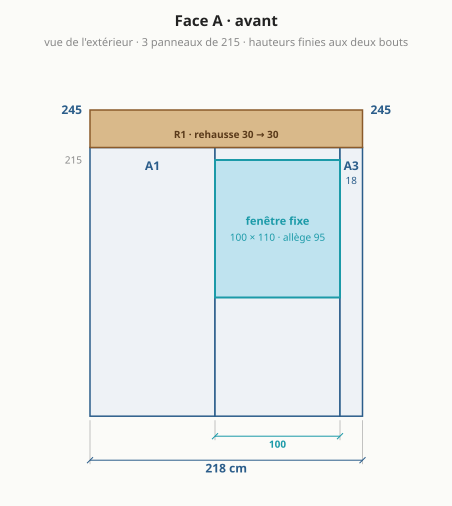
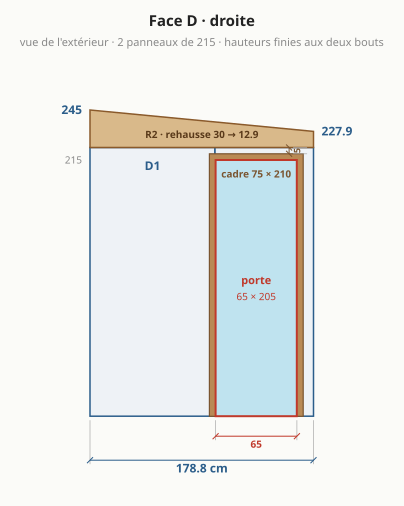
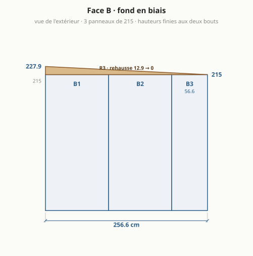
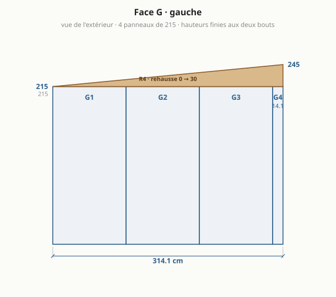
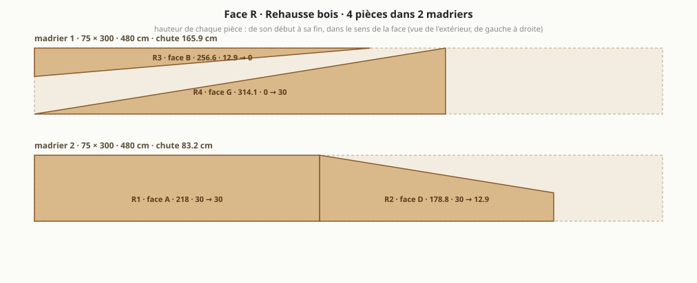

Abri de jardin : le bureau trapèze, version 1 (première forme retenue)
Archive figée le 2026-09-22. Cette étude n'est plus recalculée : ses paramètres ne sont plus dans
params.json, ses chiffres et ses plans datent de ce jour. L'abri retenu est dans abri.md. Les autres formes étudiées : variantes.md.

En bref
Dalle existante : 8,51 m², côtés 262 / 223 / 258 / 104 / 324 cm, murs de propriété à gauche et au fond.
4,81 m² intérieur (5,37 m² de murs), 50,6 cm de passage derrière.
4 murs en panneaux sandwich 6 cm autoportants : façade 218, droite 178,8, fond en biais 256,6, gauche 314,1 cm.
Toit mono-pente vers le fond, 5,46° : 245 cm devant, 215 cm au plus bas.
Porte 65 × 205 sur le mur droit, une fenêtre de 100 en façade, bureau en L sur la façade et le mur gauche, lit 70 × 190 rabattable contre le fond.
Matériaux : 3 680 € TTC (3 128 € à 4 232 €), sans main-d'œuvre ni livraison ; équipement optionnel 186 €.
Formalités : emprise au sol 5,37 m², surface de plancher 4,81 m² ⇒ déclaration préalable.
À trancher
- Toit : vers l'arrière, chute 30 cm (5,46°) = choix par défaut. Madrier 75 × 300 classe 4 à trouver (sinon deux pièces superposées).
- Formalités : emprise au sol 5,37 m² (les débords de toit, simples et en l'air, n'entrent pas dans l'emprise au sol : Code de l'urbanisme R*420-1), surface de plancher 4,81 m² ⇒ déclaration préalable (seuils 5 puis 20 m²). secteur protégé ou abords d'un monument historique : déclaration préalable même sous le seuil ; le PLU (implantation, hauteur, distance aux limites) s'applique dans tous les cas.
- Lit 70 × 190 rabattable contre le mur du fond : déplié, son pied passe sous le bureau gauche (lit plus bas que le plateau, pas de tiroir ni de traverse à cet endroit) et il va jusque devant la porte (elle ouvre dehors) ; fixations à dimensionner (2 charnières sur le mur du fond, reprise dans la rehausse ou une lisse).
- Fenêtre de 100 : aussi large qu'un module, elle prend tout le panneau A2, qui ne garde qu'une allège de 95 cm et un linteau de 10 cm. Elle est fixe : la seule aération est la porte (plus la ventilation prévue) ; une ouvrante coûte ~120 € de plus.
- Portée du toit (~3,1 m au plus long) en 6 cm sans panne : à confirmer dans le tableau du fabricant.
- Angles non droits (121,8°, 58,2°) : profils d'angle pliés sur mesure.
Plans
Implantation sur la dalle
Plan de sol

Toiture

Face A · façade (jardin)

Face D · droite (porte)

Face B · fond en biais

Face G · gauche

Rehausse bois : débit des madriers

Dimensions
| face | longueur ext. | longueur int. | hauteur finie (début → fin) | angle au début |
|---|---|---|---|---|
| A · avant | 218 cm | 206 cm | 245 → 245 cm | 90° |
| D · droite | 178,8 cm | 169,4 cm | 245 → 227,9 cm | 90° |
| B · fond en biais | 256,6 cm | 242,5 cm | 227,9 → 215 cm | 121,8° |
| G · gauche | 314,1 cm | 297,3 cm | 215 → 245 cm | 58,2° |
Murs 5,37 m² · intérieur 4,81 m² (murs de 6 cm retirés) · sol libre hors bureaux 2,41 m² · hauteur sous plafond 2,39 m devant, 2,09 m au plus bas (plancher isolé déduit).
Débit
Panneaux de mur (hauteur 215 cm, pose verticale)
| pièce | largeur | provenance | découpe |
|---|---|---|---|
| A1 | 100 cm | panneau entier | – |
| A2 | 100 cm | panneau entier | fenêtre 100 × 110 |
| A3 | 18 cm | chute d'un autre panneau | – |
| D1 | 100 cm | panneau entier | porte 75 × 210 |
| D2 | 78,8 cm | panneau recoupé | porte 75 × 210 |
| B1 | 100 cm | panneau entier | – |
| B2 | 100 cm | panneau entier | – |
| B3 | 56,6 cm | panneau recoupé | – |
| G1 | 100 cm | panneau entier | – |
| G2 | 100 cm | panneau entier | – |
| G3 | 100 cm | panneau entier | – |
| G4 | 14,1 cm | chute d'un autre panneau | – |
10 panneaux de mur de 100 × 215 à commander (les bandes étroites sortent des chutes).
Panneaux de toit (dans le sens de la pente, longueur = rampant)
| pièce | largeur | longueur à commander | coupe |
|---|---|---|---|
| T1 | 100 cm | 337,4 cm | bout arrière en biais |
| T2 | 100 cm | 275,1 cm | bout arrière en biais |
| T3 | 18 cm | 212,7 cm | refendu en largeur, bout arrière en biais |
Débords : 10 cm devant, 10 cm au fond, rives affleurantes sur les côtés. Surface couverte 5,85 m².
Rehausse bois (madrier 75 × 300, stock 480 cm)
| pièce | face | longueur | hauteur début → fin |
|---|---|---|---|
| R1 | A | 218 cm | 30 → 30 cm |
| R2 | D | 178,8 cm | 30 → 12,9 cm |
| R3 | B | 256,6 cm | 12,9 → 0 cm |
| R4 | G | 314,1 cm | 0 → 30 cm |
2 madriers : n°1 = R4 + R3 (chute 165,9 cm) ; n°2 = R1 puis R2 (chute 83,2 cm). Deux pièces sur un même tronçon = une seule coupe en biais.
Gouttière et profils
- Gouttière 256,6 cm le long du fond, descente au coin arrière gauche (point bas), atteignable par le passage.
- 4 angles : G/A 90°, A/D 90°, D/B 121,8°, B/G 58,2° ; hauteur de chaque angle = hauteur finie du coin.
- Rail de pied sur tout le périmètre (9,68 m), bavettes de rive sur les côtés D et G.
Ouvertures
| ouverture | taille | où | détail |
|---|---|---|---|
| porte vitrée | 65 × 205 (cadre 75 × 210) | face D, de 100,5 à 165,5 cm depuis la façade | ouvre vers l'extérieur ; cadre à 5 cm du mur du fond (face intérieure) et sous le haut du mur |
| fenêtre fixe | 100 × 110 | face A, de 100 à 200 cm depuis le coin gauche | allège 95 cm, au-dessus du bureau, dans un seul panneau |
Aménagement
| élément | taille | place |
|---|---|---|
| bureau gauche | 60 × 297,3 cm | tout le mur gauche |
| bureau de façade | 50 × 206 cm | tout le mur de façade |
| fauteuil de bureau | 70 × 70 cm | devant le bureau gauche |
| tabouret | 30 × 30 cm | devant le bureau de façade |
| lit rabattable (déplié) | 70 × 190 cm | contre le mur du fond (replié : 10 cm), pied sous le bureau gauche, sièges rangés |
Matériaux à acheter (prix TTC, sans main-d'œuvre, sans livraison)
Panneaux · 1 317 €
| matériau | quantité | prix unitaire | montant | comment c'est compté, d'où vient le prix |
|---|---|---|---|---|
| Panneaux sandwich de mur 60 mm, 100 × 215 cm (prix à confirmer) | 21,5 m² | 44 € | 946 € | 10 panneaux entiers à commander (les bandes recoupées sortent des chutes). fixation cachee PIR 60 mm : 37,80 EUR/m2 par paquet entier ; 40 a 50 EUR/m2 en petite quantite ou au detail (negoce). La plupart des vendeurs en ligne imposent 100 m2 ou un paquet de 12 panneaux de 6 m. (source) |
| Panneaux sandwich de toiture 60 mm, nervurés, teinte claire (prix à confirmer) | 8,25 m² | 45 € | 371 € | 3 panneaux coupés à longueur : T1 337,4 cm, T2 275,1 cm, T3 212,7 cm. 35,40 EUR/m2 par paquet de 10 ; 34,20 chez toleacier.fr en longueurs de stock ; jusqu'a 71 EUR/m2 au detail en negoce (Ondatherm). Teinte claire RAL 9010 disponible sur commande. (source) |
Bois · 165 €
| matériau | quantité | prix unitaire | montant | comment c'est compté, d'où vient le prix |
|---|---|---|---|---|
| Madrier 75 × 300 classe 4 (rehausse, lisse haute) | 9,6 ml | 15 € | 141 € | 2 pièce(s) de 480 cm. classe 4 : la section en stock est 70 x 220 (58,80 EUR les 4 m, 66 EUR les 4,5 m). Le 75 x 225 n'existe en stock qu'en classe 2 (environ 10 EUR/m). (source) |
| Bois du cadre de porte, section 50 × 60 mm (prix à confirmer) | 4,85 ml | 5 € | 24 € | deux montants + une traverse haute. pas de prix releve |
Profils et bavettes · 461 €
| matériau | quantité | prix unitaire | montant | comment c'est compté, d'où vient le prix |
|---|---|---|---|---|
| Profil de départ en U (rail de pied) (prix à confirmer) | 8,93 ml | 12 € | 107 € | périmètre des murs moins le cadre de la porte. 4,86 EUR HT la longueur de 0,5 m (source) |
| Profils d'angle à 90°, extérieur + intérieur | 9,8 ml | 10 € | 98 € | 2 angles droits, hauteur finie de chaque coin, deux faces. 7,92 EUR HT le metre, tole 0,75 mm (source) |
| Profils d'angle pliés sur mesure (121,8°, 58,2°), extérieur + intérieur (prix à confirmer) | 8,86 ml | 15 € | 133 € | 2 angles non droits, deux faces. aucun prix public pour un pliage a 135 degres : estimation d'apres le profil standard, a faire chiffrer (source) |
| Bandes de rive de toit | 5,37 ml | 14 € | 75 € | bords du toit parallèles à la pente. 12,90 EUR/m en longueurs de 2,1 m (source) |
| Bavette de tête (bord haut du toit) | 2,18 ml | 14 € | 31 € | bord haut du toit. solin ou faitiere 2,10 m : 29 EUR (source) |
| Closoirs mousse sous les nervures (prix à confirmer) | 4,75 ml | 4 € | 17 € | bord haut + bord d'égout. rouleau de 6 m de 11,90 a 21,90 EUR ; le profil doit correspondre aux nervures du panneau choisi (source) |
Fixations · 123 €
| matériau | quantité | prix unitaire | montant | comment c'est compté, d'où vient le prix |
|---|---|---|---|---|
| Vis autoperceuses de toiture à rondelle, longues (panneau + nervure dans le bois) | 0,27 cent | 90 € | 24 € | 3 panneaux × 2 appuis × 4 vis, +10 %. inox 6,5 x 145 a rondelle EPDM : 89,99 EUR le cent. Longueur = panneau + nervure + 50 mm dans le bois. (source) |
| Vis de couture (recouvrements de panneaux, bavettes, profils) | 0,81 cent | 35 € | 28 € | un recouvrement tous les 40 cm, une bavette tous les 30 cm, +10 %. 4,8 x 20 : de 24 a 45 EUR le cent (source) |
| Vis autoperceuses de panneaux de mur (pied et tête) | 0,66 cent | 90 € | 59 € | 10 panneaux × 2 extrémités × 3 vis, +10 %. vis 6,3 x 100 + rondelle + cache de couleur (source) |
| Chevilles ou goujons pour fixer le rail dans la dalle | 22 u | 1 € | 12 € | une tous les 50 cm. goujons 8 x 80 : 55,90 EUR la boite de 100 (source) |
Étanchéité · 172 €
| matériau | quantité | prix unitaire | montant | comment c'est compté, d'où vient le prix |
|---|---|---|---|---|
| Bande d'arase sous le rail de pied | 9,68 ml | 1 € | 5 € | périmètre des murs. rouleau de 30 m x 30 cm : 16,90 EUR (source) |
| Bande butyle (joints de panneaux, tête de mur sous la rehausse) | 33,16 ml | 2 € | 50 € | 8 joints de mur × 2,2 m + périmètre + recouvrements de toit. rouleau de 13 m : 19,66 EUR (source) |
| Mastic polyuréthane ou MS polymère, cartouches | 4 cartouche | 9 € | 36 € | une cartouche pour 8 m de cordon : pied de mur dedans et dehors, tour des ouvertures. MS polymere de 6,50 a 13 EUR ; Sikaflex 11FC environ 11,50 EUR (source) |
| Bande comprimée au pourtour des ouvertures (prix à confirmer) | 8,95 ml | 7 € | 63 € | tour de la porte et des fenêtres. rouleau de 5 m : 44 EUR en negoce, moins cher ailleurs (source) |
| Mousse polyuréthane expansive, bombes | 2 bombe | 9 € | 18 € | calfeutrement des ouvertures et des angles. 750 ml : de 7,90 a 9,90 EUR (source) |
Ouvertures · 1 065 €
| matériau | quantité | prix unitaire | montant | comment c'est compté, d'où vient le prix |
|---|---|---|---|---|
| Porte de service vitrée 65 × 205 cm, avec dormant (prix à confirmer) | 1 u | 900 € | 900 € | une porte. pas de prix releve (l'abri retenu a une porte pleine) |
| Fenêtre fixe PVC double vitrage 100 × 110 cm (prix à confirmer) | 1 u | 165 € | 165 € | fenêtres fixes. 80 x 80 n'est pas une taille de stock : chassis fixe sur mesure, 4 a 5 semaines (source) |
Eaux pluviales · 82 €
| matériau | quantité | prix unitaire | montant | comment c'est compté, d'où vient le prix |
|---|---|---|---|---|
| Gouttière demi-ronde | 2,57 ml | 5 € | 12 € | 1 tronçon(s) : B 256,6 cm. PVC demi-ronde de 25 : 9,40 EUR les 2 m (zinc : 22,50 EUR les 2 m) (source) |
| Crochets de gouttière | 7 u | 2 € | 14 € | un tous les 50 cm (source) |
| Naissance, fonds, angle, coudes et colliers (lot) | 1 lot | 45 € | 45 € | une naissance, deux fonds, deux coudes, deux colliers. naissance 14 + 2 fonds 6 + jonction ou angle 5 + 2 coudes 11 + 3 colliers 8 (source) |
| Tuyau de descente | 2,15 ml | 5 € | 11 € | hauteur du mur côté égout. tube de 80 : 10 EUR les 2 m (source) |
Plancher isolé · 228 €
| matériau | quantité | prix unitaire | montant | comment c'est compté, d'où vient le prix |
|---|---|---|---|---|
| Lambourdes traitées (entraxe 40 cm) | 14 ml | 3 € | 46 € | surface intérieure ÷ 0,40 m, +10 %. classe 4, 45 x 70, 2,70 m : 8,90 EUR (source) |
| Isolant rigide 40 mm entre lambourdes | 5,05 m² | 7 € | 38 € | surface intérieure, +5 %. polystyrene extrude 40 mm (source) |
| Film polyéthylène sous le plancher | 5,53 m² | 1 € | 6 € | surface intérieure, +15 % de recouvrements. rouleau de 20 m2 : 19,90 EUR (source) |
| Dalles OSB3 18 mm rainurées | 5,29 m² | 11 € | 59 € | surface intérieure, +10 % de chutes. dalle OSB3 18 mm 2500 x 675 : 18,95 EUR (source) |
| Revêtement de sol (vinyle ou stratifié) | 5,29 m² | 15 € | 79 € | surface intérieure, +10 % de chutes. vinyle rigide a clipser ; stratifie des 5 EUR/m2 (source) |
Équipement (optionnel) · 186 €
| matériau | quantité | prix unitaire | montant | comment c'est compté, d'où vient le prix |
|---|---|---|---|---|
| Grilles ou entrées d'air murales | 2 u | 8 € | 16 € | une basse, une haute, sur deux murs opposés. grille avec moustiquaire, de 4 a 16 EUR ; un extracteur hygroreglable coute 95 EUR (source) |
| Goulotte électrique 2 m | 3 u | 15 € | 45 € | la moitié du périmètre, en longueurs de 2 m. 60 x 40, longueur de 2 m (source) |
| Multiprise parafoudre (prix à confirmer) | 1 u | 20 € | 20 € | sur le câble déjà en place. pas de prix lu, 15 a 30 EUR |
| Réglette ou plafonnier LED | 1 u | 10 € | 10 € | un point lumineux. reglette LED 120 cm 36 W : 6,90 EUR (source) |
| Radiateur panneau 750 W à thermostat | 1 u | 65 € | 65 € | bureau chauffé toute l'année. panneau acier 750 W, thermostat, detection de fenetre ouverte (source) |
| Stores des fenêtres de façade (prix à confirmer) | 1 u | 30 € | 30 € | un par fenêtre. pas de prix releve |
Consommables · 67 €
| matériau | quantité | prix unitaire | montant | comment c'est compté, d'où vient le prix |
|---|---|---|---|---|
| Lame de scie circulaire pour métal (coupe à froid des panneaux) | 1 u | 67 € | 67 € | jamais de meuleuse : elle brûle le laquage et la mousse. Bosch Expert for Sandwich Panel, 36 dents (source) |
Total des matériaux : 3 680 € TTC (fourchette 3 128 € à 4 232 €, ±15 %). Équipement optionnel en plus : 186 €. Hors total : Livraison des panneaux (service, hors total) ≈ 250 €.
Prix relevés chez des marchands français (prix_materiaux_eur_ttc dans params.json, source notée pour chacun) ; les quantités se recalculent avec l'abri.
Guide de montage
Avant de commander
- Faire confirmer par le fournisseur la largeur utile des panneaux (100 cm ici, la largeur de tous les panneaux de 60 mm relevés) : tout le calepinage en dépend.
- Acheter des panneaux en petite quantité est le vrai sujet. Les vendeurs en ligne les moins chers imposent 100 m² ou un paquet entier de panneaux de 6 à 7,5 m. Demander un devis « coupé à longueur, petite quantité » à deux spécialistes et à un négoce local, qui vend au panneau mais plus cher. Sinon acheter des longueurs de stock et les recouper sur place : compter alors plus de surface que le débit.
- Rehausse : le madrier 75 × 300 ne se trouve en stock qu'en classe 2. En classe 4 la section courante est 70 × 220, en 4 m ou 4,5 m : la prendre (la chute du toit perd 5 mm, sans conséquence) ou protéger un classe 2 par la bavette.
- Fenêtres : 80 × 80 n'est pas une taille de stock (sur mesure, 4 à 5 semaines). En stock il existe du 80 de large × 75 ou 105 de haut. Porte : le bloc de service plein 205 × 80 avec dormant est un article de stock.
- Faire confirmer la portée admise du panneau de toit de 6 cm : 3,1 m ici ; et la pente minimale (9,6 % ici ; ArcelorMittal admet 5 % pour des panneaux d'une seule longueur, sans pénétration ni recouvrement en bout).
- Commander les panneaux de toit coupés à longueur, et les profils des angles de 121,8° et 58,2° pliés sur mesure, en même temps que les panneaux.
- Vérifier au PLU la règle d'implantation (l'abri est à 12 cm de la limite).
- Prévoir deux personnes pour lever les murs et poser le toit, et une journée sans vent : un panneau de 2 m² est une voile.
Outillage
- Scie circulaire avec lame pour métal (coupe à froid) et rail de guidage ; scie sauteuse lame métal pour les angles des ouvertures. Pas de meuleuse : elle brûle le laquage et la mousse, et ses étincelles piquent la tôle.
- Visseuse à choc avec douilles 8 mm, perforateur et foret béton, cordeau à tracer, mètre de 5 m, niveau de 1,20 m ou laser, grande équerre, fil à plomb.
- Pistolet à mastic, cutter, serre-joints, 4 étais ou chevrons pour tenir les murs pendant le montage, échelle ou escabeau stable.
- Gants anti-coupure, lunettes, protection auditive. Les rives de tôle coupent.
Étape 1 · Tracer l'abri sur la dalle
Tout le reste s'aligne sur ce tracé : dix minutes de plus ici évitent un mur qui ne ferme pas.
Outils : cordeau, mètre, grande équerre
- Tracer la façade à 5 cm du bord avant de la dalle et le mur gauche à 12 cm du bord gauche.
- Reporter les 4 murs dans l'ordre : A 218 cm, D 178,8 cm, B 256,6 cm, G 314,1 cm.
- Angles, dans le même ordre : 90°, 90°, 121,8°, 58,2°.
À contrôler avant de continuer :
- Diagonales du tracé : coin avant gauche → haut du mur droit = 281,9 cm ; coin avant droit → coin arrière gauche = 382,3 cm.
- Passage derrière l'abri : 50,6 cm au plus étroit, à mesurer une fois le tracé fait.
Étape 2 · Poser le rail de pied
Le rail tient le pied des panneaux et les isole de l'eau de la dalle.
Outils : perforateur, visseuse, niveau
- Dérouler la bande d'arase sur le tracé (9,68 m), poser le profil en U dessus, nu extérieur du rail sur le trait.
- Cheviller tous les 50 cm, et à 10 cm de chaque angle.
- Interrompre le rail sur la largeur du cadre de la porte (75 cm, face D).
- Cordon de mastic continu entre le rail et la dalle, côté extérieur.
À contrôler avant de continuer :
- Rail de niveau : caler si la dalle a plus de 5 mm de faux niveau sur un mur.
- Angles du rail conformes au tracé avant de cheviller le dernier mur.
Étape 3 · Préparer toutes les coupes à plat
Un panneau se coupe bien sur tréteaux, mal une fois debout.
Outils : scie circulaire lame métal, rail de guidage, scie sauteuse
- Bandes de mur : A3 18 cm, D2 78,8 cm, B3 56,6 cm, G4 14,1 cm. Couper dans la longueur, face laquée vers le bas, et garder les chutes : elles fournissent les autres bandes.
- Fenêtres : 100 × 110 cm, bas à 95 cm, une par panneau, jamais sur un joint. Percer les quatre angles, puis couper à la scie sauteuse.
- Toit : T1, T2, T3 à couper en biais d'après le plan de toiture.
- Rehausse : R1 (mur A, 218 cm, 30 → 30 cm), R2 (mur D, 178,8 cm, 30 → 12,9 cm), R3 (mur B, 256,6 cm, 12,9 → 0 cm), R4 (mur G, 314,1 cm, 0 → 30 cm), tirées de 2 madrier(s) selon le plan de débit.
À contrôler avant de continuer :
- Retirer le film de protection des panneaux au fur et à mesure : après quelques semaines au soleil il ne part plus.
- Ébavurer chaque coupe et passer une retouche de peinture sur la tôle mise à nu.
Étape 4 · Monter le mur gauche à plat, puis le lever
À 12 cm du grillage de la limite aucune visseuse ne passe : ce mur se fait au sol.
Outils : visseuse, serre-joints, 2 personnes, étais
- Assembler G1 (100), G2 (100), G3 (100), G4 (14,1) à plat, butyle dans chaque joint, et visser dessus leur pièce de rehausse.
- Placer la bande de 14,1 cm côté façade, la seule extrémité qu'on atteindra ensuite.
- Lever le mur à deux, l'engager dans le rail, le tenir par deux étais vissés dans la rehausse.
- Visser le pied dans le rail depuis l'intérieur.
À contrôler avant de continuer :
- Aplomb dans les deux sens avant de lâcher les étais.
- Vide de 12 cm régulier sur toute la longueur.
Étape 5 · Monter les autres murs
On tourne dans un seul sens pour que chaque panneau s'emboîte dans le précédent.
Outils : visseuse, niveau, étais
- Mur B (fond en biais, 256,6 cm) : B1 (100), B2 (100), B3 (56,6).
- Mur D (droite, 178,8 cm) : D1 (100), D2 (78,8), en laissant le vide du cadre de porte.
- Mur A (façade, 218 cm) : A1 (100), A2 (100), A3 (18).
- Butyle dans chaque emboîtement, panneau serré contre le précédent, vissé au pied dans le rail.
- Étayer chaque mur tant que la rehausse n'est pas posée : avant elle, rien ne tient les têtes.
À contrôler avant de continuer :
- Aplomb de chaque panneau avant de visser le suivant : l'erreur se cumule.
- Têtes de murs toutes à 215 cm, à 3 mm près, au niveau laser.
Étape 6 · Fermer les angles
Les profils d'angle lient deux murs et ferment la mousse.
Outils : visseuse, mastic
- Profil extérieur puis intérieur à chacun des 4 angles, vissé tous les 30 cm (vis de couture), mastic sous les deux ailes.
- Les angles de 121,8° et 58,2° reçoivent les profils pliés sur mesure : les présenter à blanc avant de percer.
- Bourrer le vide de l'angle à la mousse avant de fermer le profil intérieur.
À contrôler avant de continuer :
- Aucun jour entre profil et panneau : c'est là que l'air et l'eau entrent.
Étape 7 · Poser la rehausse bois
Elle donne la pente au toit et sert de lisse haute : c'est elle qui tient les murs entre eux.
Outils : visseuse, serre-joints
- Poser R1 sur A, R2 sur D, R3 sur B, R4 sur G, sur un cordon de butyle en tête de panneaux.
- Visser la rehausse dans la tôle des deux faces de chaque panneau, tous les 40 cm.
- Assembler les pièces entre elles aux angles par deux longues vis en biais.
À contrôler avant de continuer :
- Hauteurs finies des coins : 245 · 245 · 227,9 · 215 cm (dans l'ordre des coins, à partir du coin avant gauche).
- Dessus de la rehausse dans un même plan : poser une règle d'un mur à l'autre.
Étape 8 · Couvrir
Nervures dans le sens de la pente, vers le fond : l'eau ne quitte le toit que par le bas des panneaux.
Outils : visseuse, 2 personnes, échelle
- Poser T1 (100 × 337,4 cm), T2 (100 × 275,1 cm), T3 (18 × 212,7 cm), en commençant du côté opposé aux vents dominants.
- Closoirs mousse sous les nervures, en haut et en bas, avant de visser.
- Visser dans la rehausse par le sommet des nervures, vis longues à rondelle, quatre par panneau et par appui. Serrer jusqu'à écraser la rondelle, pas plus.
- Recouvrements entre panneaux : butyle, puis vis de couture tous les 40 cm.
- Bandes de rive sur les bords parallèles à la pente, bavette de tête sur le bord haut.
À contrôler avant de continuer :
- Débords : 10 cm devant, 10 cm au fond, 0 cm à droite, 0 cm à gauche.
- Ne jamais marcher entre deux appuis : marcher au droit des murs, sur une planche.
Étape 9 · Gouttière et descente
Recueillir toute l'eau du toit et l'emmener au jardin.
Outils : visseuse, niveau, scie à métaux
- 256,6 cm de gouttière en 1 tronçon(s) : B 256,6 cm.
- Crochets tous les 50 cm, pente de 5 mm par mètre vers la descente.
- Descente au point bas, évacuée loin de la dalle.
À contrôler avant de continuer :
- Verser un seau d'eau en haut du toit : tout doit arriver à la descente.
Étape 10 · Poser la porte
Le cadre bois reprend la porte : le panneau seul ne porte pas de paumelles.
Outils : visseuse, niveau, cales
- Monter le cadre bois de 75 × 210 cm dans le vide du mur D, vissé dans la dalle en pied et dans la rehausse en tête.
- Poser la porte vitrée de 65 × 205 cm dans le cadre, ferrée côté fond, ouvrant vers l'extérieur.
- Bande comprimée entre dormant et cadre, mastic à l'extérieur, seuil sur cordon de mastic.
À contrôler avant de continuer :
- Jeu régulier de 3 mm autour du battant, la porte se ferme sans forcer.
- Arrêt de porte à prévoir : ouverte, elle prend le vent.
Étape 11 · Poser les fenêtres
Une fenêtre se fixe dans la tôle des deux faces, jamais dans la mousse.
Outils : visseuse, niveau, cales
- 1 fenêtre(s) en façade : fixe de 100 à 200 cm.
- Habiller la tranche de la découpe d'un profil en U ou d'un tasseau, caler la fenêtre, visser par le dormant.
- Bande comprimée au pourtour, mastic dehors, bavette d'appui sous la fenêtre.
À contrôler avant de continuer :
- Niveau et aplomb du dormant avant le serrage final.
- L'ouvrante s'ouvre sans toucher le bureau.
Étape 12 · Étanchéité générale
L'air qui entre apporte l'humidité qui condense sur l'acier.
Outils : pistolet à mastic, mousse
- Cordon de mastic au pied des murs, dedans et dehors.
- Fermer le vide de 12 cm contre le grillage de la limite : bavette devant, grillage fin au fond (feuilles, rongeurs), sans bloquer l'écoulement de l'eau.
- Mousse puis mastic à chaque traversée (câble, entrée d'air).
À contrôler avant de continuer :
- De nuit, une lampe allumée dedans : aucun jour visible de dehors.
Étape 13 · Plancher isolé
La dalle est froide : le plancher fait le confort des pieds.
Outils : scie, visseuse
- Film polyéthylène sur la dalle, remonté de 10 cm le long des murs.
- Lambourdes tous les 40 cm, calées de niveau, isolant rigide de 40 mm entre elles.
- Dalles OSB de 18 mm vissées, joints décalés, 8 mm de jeu contre les murs ; revêtement de sol ensuite.
À contrôler avant de continuer :
- Hauteur sous plafond après plancher : 2,39 m au plus haut, 2,09 m au plus bas.
Étape 14 · Ventilation, électricité, aménagement
Une pièce étanche et chauffée sans ventilation condense.
Outils : scie cloche, visseuse
- Deux entrées d'air sur deux murs opposés, une basse et une haute.
- Électricité en apparent, sous goulotte, depuis le câble existant : on ne perce pas la tôle extérieure pour un câble.
- Bureaux sur pieds ou sur équerres au sol : 60 × 297,3 cm à gauche, 50 × 206 cm en façade. Les parements de 0,5 mm ne portent pas une charge suspendue.
À contrôler avant de continuer :
- Après une semaine chauffée : aucune trace de condensation aux angles ni autour des fenêtres.